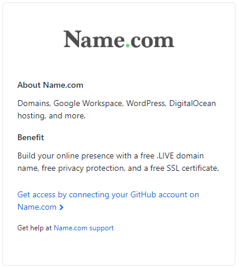
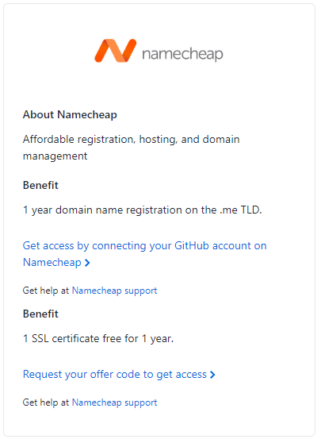
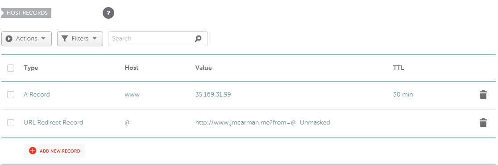
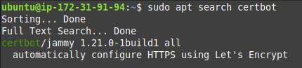
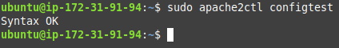
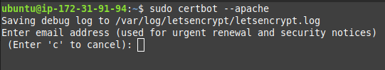
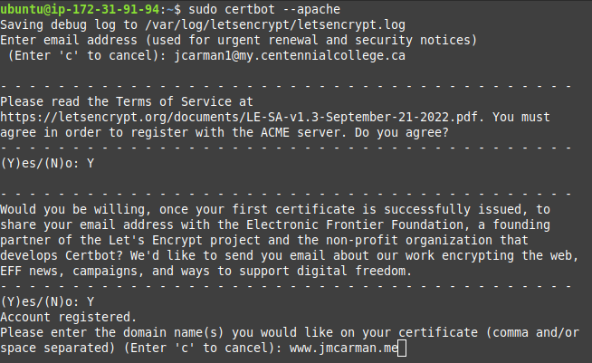

Assignment 1 - Fall 2023 - Due Friday, November 24th at 11:59pm
Overview
"The power of the Web is in its universality. Access by everyone regardless of disability is an essential aspect." - Tim Berners-Lee, W3C Director and inventer of the World Wide Web. To accomplish this, the W3C has outlined accessibility standards as recommended best practices to follow.
In this assignment, you are going to research the W3C Web Accessibility Initiative(WAI) and create a webpage. You will also register a domain name, generate an SSL certificate and add HTTPS to your Apache server configuration.
Accessing the GitHub Student Developer Pack
Login to GitHub Education to request access your Student Developer Pack. You will need to navigate to Students > Get your Student Developer Pack to request it.

Click on Explore More Offers. This comes with 80+ offers including $200 credit for Microsoft Azure, and at least two different offers to register a free or discounted domain name.

Have a look through the list of things you get either discounted or free. You will be using a free domain for this course (outlined in the next section). However, you can keep it for as long as you want and repurpose it for anything once this course is done. You may choose any domain name you like, as long as it is available and school appropriate (G rated). You are going to use this domain for Assignment 2 as well.
Registering a Domain name
You have two offers for a free (for a year, renewable as long as you are a student) domain through the Student Developer Pack, available through Name.com or Namecheap.com. To access these, click on Explore More Offers in the Student Develper Pack. Click on any of the two of these and login with your GitHub account to activate the offer. You may want to view each one to see what top level domains are available. Name.com has more options. However, namecheap has some extremely inexpensive options if you decide to keep the domain and pay for it yourself after a year. You may also need to create an account.
 This next part will vary depending on who you have registered your domain name with. You are going to add an A record for the host www with the value of the elastic IP for your www instance in AWS. Here is an example of what it looks like using a .me domain through namecheap. See below for instructional information and videos on each registrar.
Name.com: How to add an A record
Namecheap: How to add an A record
Once you finish this course, you can remove the A record for www and use it for personal use if you wish.
Testing your Domain name
- Launch the AWS Learner Lab and login. Make sure your www instance is running.
- Type www.example.com (replace this with your domain name) in the URL bar of a web browser. This could be on your PC, or any device. You should see your lab website! If you don't, double check and make sure you see http:// and not https://.
Next, login to your first instance and issue the following commands. Note the output of each. Substitute your domain name for www.example.com.
nslookup www.example.com
and
dig www.example.com
Preparing your system to generate and install an SSL Certificate
Login to your www instance. You are going to install Certbot, which will automate configuring HTTPS using Let's Encrypt.
Installing Certbot
First, check to see if it is available by issuing the following command.
sudo apt search certbot
You should see the following output.
Once you have confirmed it is available, install it.
sudo apt -y install certbot python3-certbot-apache
Configuring an Apache Virtual Host
Create the and edit a file for your virtual host configuration. You can use either vi or nano. Replace wwwexamplecom with your domain name, with the www and top level domain, but without the .. This will allow Certbot to find the correct VirtualHost block and update it.
sudo vi /etc/apache2/sites-available/wwwexamplecom.conf
Enter the following text (again, replacing the domain name with yours).
ServerName www.example.com
Testing and Reloading the Apache configuration
Enter the following command to test your Apache configuration.
sudo apache2ctl configtest
You should see a message indicating Syntax OK. If you don't, double check your file name and contents for errors. Sample output follows.
Now you can reload apache2 using systemctl.
sudo systemctl reload apache2
Generating an SSL Certificate using Let's Encrypt and Certbot
Now you are ready to generate your SSL certificate using Certbot. You are going to configure Apache to reconfigure and reload the configuration whenever necessary. This way you do not need to worry about updating your SSL certificate every 90 days, which is when certificates issued through Let's Encrypt and Certbot expire. Issue the following command:
sudo certbot --apache
At the email address prompt, enter your Centennial College issued email.
Accept the terms of service. Answer as you wish for sharing your email, then enter your domain name. See the following example.
Update your security group rules to allow incoming HTTPS traffic from the anywhere IP: 0.0.0.0/0
Testing your configuration
Open a web browser try to access your lab website using HTTPS. It should work!
Research and Implement the Web Accessibility Initiative (WAI)
Research the Web Accessibility Initiative (WAI) and complete the following:
- Create a new webpage called accessibility.html
- Add a link to your new page in your website's navigation bar (on all affected pages - index.html, about.html).
- Add a comment with your name and student number.
- Add your updated navigation bar with your active class on the appropriate option.
- You should use the same stylesheet you have created in the labs.
- Implement any two of the WAI standards (that haven't already been met by following the lab instructions) into your website.
- On the new page, include a 250-500 word explaination about why the WAI standards are important and discuss the examples you used.
Evaluation
- Web site accessed using HTTPS. (5 marks)
- Web site accessed using Fully Qualified Domain Name (FQDN). (5 marks)
- Updated Navigation. (1 mark)
- accessibility.html has a comment with your name and student number. (1 mark)
- accessibility.html navigation uses the active class updated with the appropriate option. (2 marks)
- Two of the WAI standards (that have not already been met by following the lab instructions) into your website. (12 marks)
- 250-500 word explaination about why the WAI standards are important and discuss the examples you used. (4 marks)
Submission
Your project should be submitted to your GitHub repository, and the following screenshots uploaded to the assignment dropbox by the due date in order to recieve marks. Late submissions will recieve a penalty of 10% per day.
- A screenshot showing your accessibility page on your server.
- A screenshot showing accessing your server using your domain name and HTTPS.